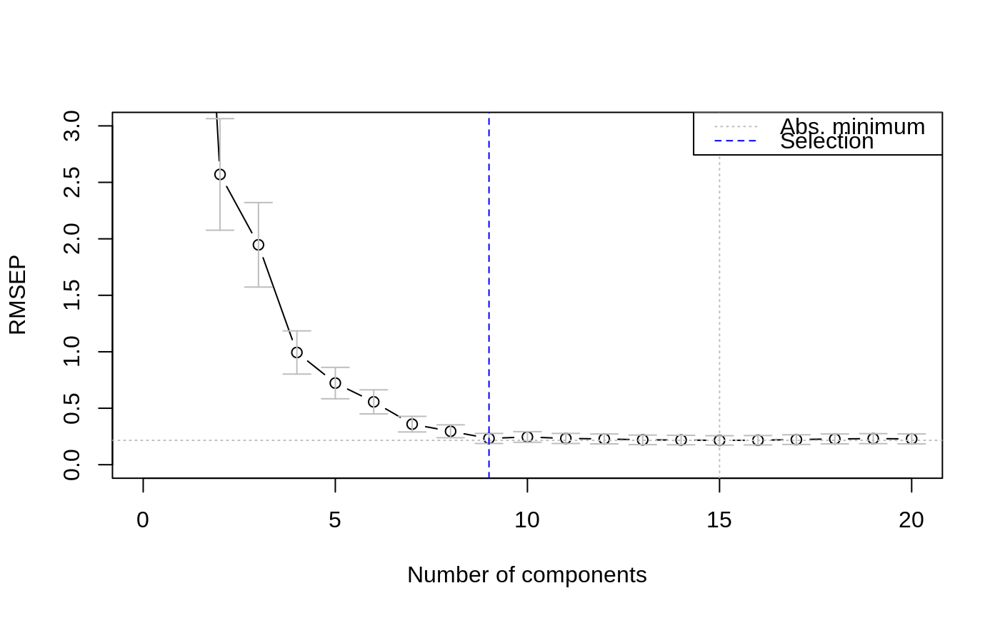
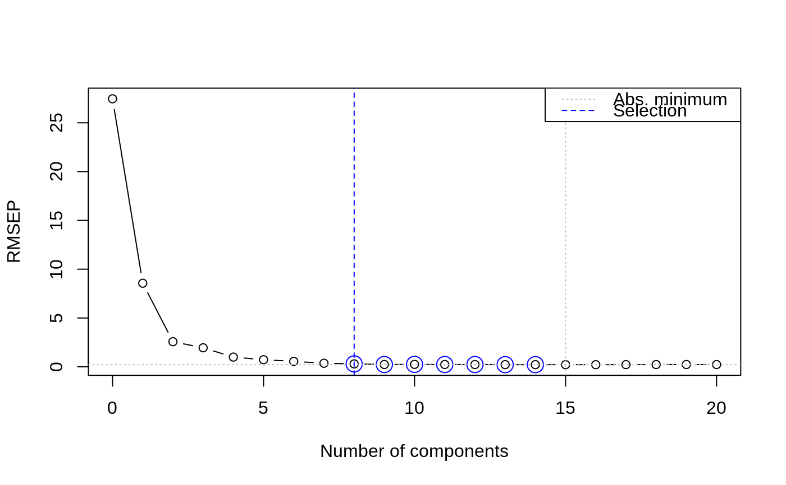
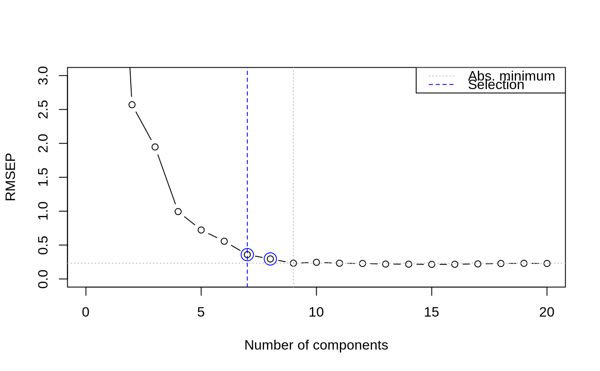

selectNcomp.RdChoosing the best number of components in PCR and PLSR models is difficult and usually done on the basis of visual inspection of the validation plots. In cases where large numbers of models are built this choice needs to be automated. This function implements two proposals, one based on randomization (permutation) testing, and an approach based on the standard error of the cross-validation residuals.
selectNcomp(object, method = c("randomization", "onesigma"), nperm = 999, alpha = 0.01, ncomp = object$ncomp, plot = FALSE, ...)
| object | an |
|---|---|
| method | character string, indicating the heuristic to use. |
| nperm | number of permutations in the |
| alpha | cutoff for p values in the |
| ncomp | maximum number of components to consider when determining the global minimum in the cross-validation curve. |
| plot | whether or not to show a cross-validation plot. The plot
for the |
| ... | Further plotting arguments, e.g., to add a title to the plot, or to limit the plotting range. |
In both approaches the results of cross-validation are used, so the model should have been calculated with some form of cross-validation. First, the absolute minimum in the CV curve is determined (considering only the first ncomp components), leading to the reference model. The randomization test approach (Van der Voet, 1994) checks whether the squared prediction errors of models with fewer components are significantly larger than in the reference model. This leads for each model considered to a \(p\) value; the smallest model not significantly worse than the reference model is returned as the selected one.
The approach "onesigma" simply returns the first model where the
optimal CV is within one standard error of the absolute optimum
(Hastie, Tibshirani and Friedman, 2009). Note that here we
simply use the standard deviation of the cross-validation
residuals, in line with the procedure used to calculate the error
measure itself. Some other packages implementing similar procedures
(such as glmnet) calculate an error measure for each validation
segment separately and use the average as the final estimate. In such
cases the standard error across segments is the relevant measure of
spread. For LOO, the two procedures are identical. In other forms of
validation, small differences will occur.
A number indicating the suggested number of components in the model.
Van der Voet, H. (1994) Comparing the predictive accuracy of models using a simple randomization test. Chemom. Intell. Lab. Syst. 25 (2), 313-323
Hastie, T., Friedman, J. and Tibshirani, R. The Elements of Statistical Learning: data mining, inference, and prediction, Springer (2013), 10th printing with corrections, paragraph 7.10.
data(yarn) yarn.pls <- plsr(density ~ NIR, data = yarn, scale = TRUE, ncomp = 20, validation = "LOO") selectNcomp(yarn.pls, "onesigma", plot = TRUE, ylim = c(0, 3))#> [1] 9selectNcomp(yarn.pls, "randomization", plot = TRUE)#> [1] 8#> [1] 7